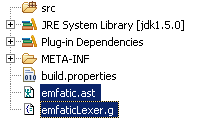
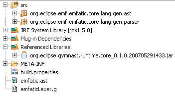
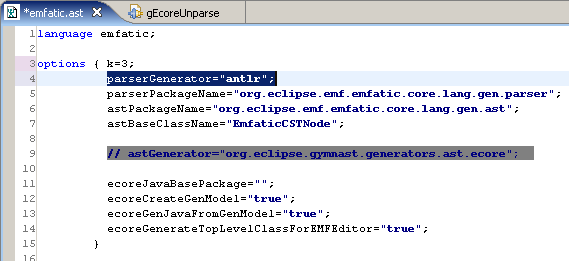
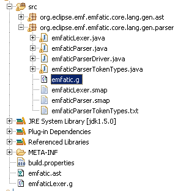

How to use Gymnast Generator
Overview
Gymnast comprises two main parts (Runtime and Generator), each of which can in
turn be divided into Core and User Interface. This section is all about using the
Gymnast Generator to:
- create
.ast files
- configure options in that file
- manually add a lexer file, and
- manually add the parser's
.jar to the (Build path or Plugin dependencies)
so that POJO-style CST classes can be generated and compiled. IDEs generated by
IDEalize rely on such parsing infrastructure, as discussed in Sec. 2.3 of the technical report
Generation of Eclipse-based IDEs for Custom DSLs.
Let's say we want to reproduce the steps to generate POJO CST classes for Emfatic.
An Eclipse project should be created and an .ast and a lexer file added, to
look as shown in Figure 1(a) (more on that lexer file later).
|  |
Figure 1(a) Before Gymnast Generator
After the generator is run (by
rightclicking on emfatic.ast and choosing "Generate AST") the result looks as in Figure
1(b).
|  |
Figure 1(b) After Gymnast Generator
Not shown here is the added plugin dependency to org.antlr, which can be
installed as described next.
What if you target ANTLR instead of JavaCC
Installing ANTLR Eclipse
Your parsing infrastructure will depend on the ANTLR parser generator framework.
The easiest way to install a plugin with ANTLR is to get it from the update site
on SourceForge by following these steps:
- In Eclipse, go to Help -> Software Updates -> Find and Install....
- Select Search for new features to install and click on Next.
- Press the New Remote Site... button and enter the following values:
name: ANTLR
url: http://antlreclipse.sourceforge.net/updates
- Now check the new ANTLR checkbox and click on Next.
- Select version 3.0.5 of the feature org.antlr.ui and click on Next.
- Accept the licensing terms and click on Next and Finish.
- Click on Install when you see a pop-up message warning about unsigned features.
- When prompted, click on Yes to restart the workbench.
Choosing target parser, and providing the parser-dependent lexer file
The choice of target parser is made with the option parserGenerator = ". . ."
(Figure 2). Unlike ANTLR, JavaCC requires no runtime library: all the code it
needs gets generated.
The lexer file (emfaticLexer.g in the ANTLR example) is actually constant for all
.asts we care to write. It can be copied from org.eclipse.gymnast.generator.core.parser
(the file ending in .g is the ANTLR one, ending in .jj the JavaCC one) The
only thing that needs updating are its filename (to match the name of the DSL in
question) and, in the case of ANTLR, the first line in the lexer file (because such
heading also contains the name of the DSL).
|  |
Figure 2 How to choose a parser
Exploring the generated artifacts
The generated grammar files (for the ANTLR example the one highlighted in
Figure 3) are not supposed to be messed up by the user, however in order to explore
them the following Eclipse plugins prove useful:
|  |
Figure 3 Generated artifacts
POJO-based CSTs
The generated POJO-style CST classes:
- exhibit useful patterns for later processing (visiting in particular)
- are independent from the chosen parser generator
The input-output relationship and the resulting code patterns are described by
Gymnast's author, Chris J Daly, in an Eclipse Tech Panel Exchange presentation,
available here.
The parser-generator-independent CST classes generated by Gymnast Generator
implement org.eclipse.gymnast.runtime.core.ast.ASTNode (Figure 4(a)).
A sample
POJO-style CST class is depicted in Figure 4(b), corresponding to the following
grammar production:
|
sequence classDecl : (abstractModifier)?
classKind name=ID
(typeParamsInfo=typeParamsInfo)?
("extends" superTypes=commaListBoundExceptWild)?
(COLON instClassName=boundExceptWildcard)?
LCURLY classMemberDecls
RCURLY ;
|
 |
Figure 4(b) ClassDecl